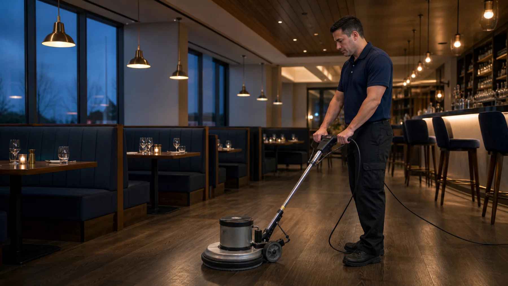
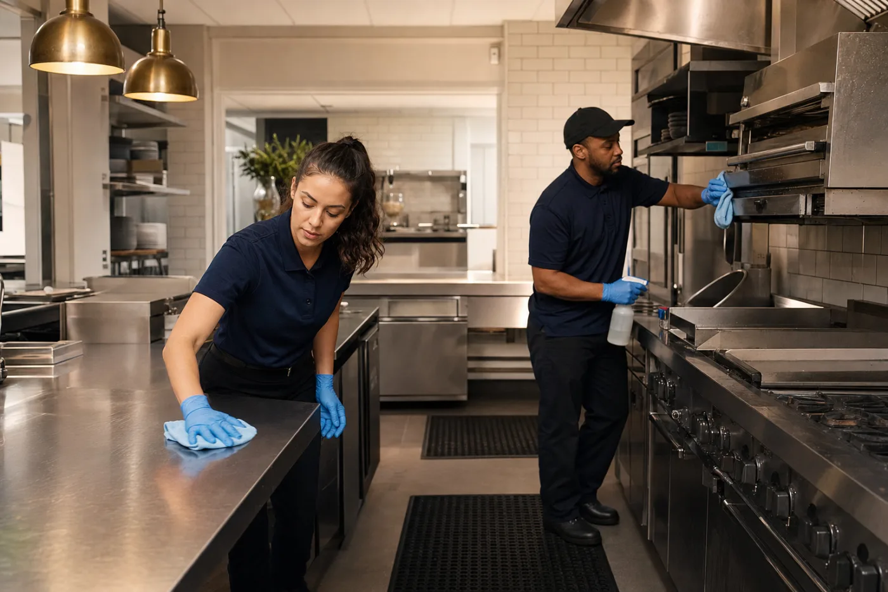
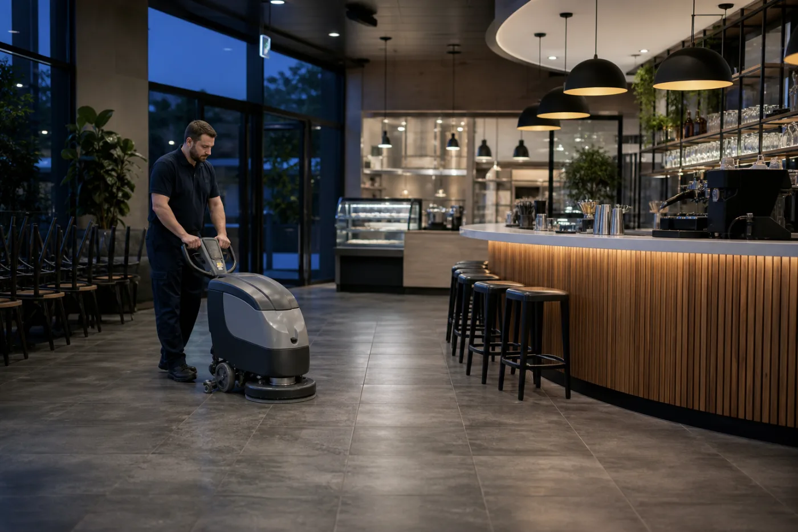

Dining Area Cleaning
Tables, seating surrounds, ledges and guest-facing areas are detailed for a polished first impression.

Restaurant Cleaning Moncton
Refresh Cleaning Pros provides reliable commercial restaurant cleaning services designed around your operating hours. Whether you manage a restaurant, café, bar, bakery or franchise, our team delivers consistent cleaning that helps your business maintain a professional appearance every day.
Complete Restaurant Cleaning Solutions
A restaurant has many surfaces, traffic patterns and cleaning priorities. We build a clear scope around your dining room, guest areas, staff spaces and approved kitchen surfaces, then complete the work on a schedule that fits your operation.
Tables, seating surrounds, ledges and guest-facing areas are detailed for a polished first impression.
Fixtures, mirrors, counters, floors and high-touch points receive consistent attention.
Approved exterior and non-food-contact surfaces are cleaned according to the agreed checklist.
Sweeping, vacuuming, mopping and commercial floor cleaning help manage daily traffic and buildup.
Entry glass, interior windows, partitions and mirrors are cleaned for a brighter appearance.
Commercial carpet care lifts tracked-in soil from dining areas, halls and entrance zones.
Booths, banquettes and fabric seating can be refreshed to support a cleaner guest environment.
Suitable resilient flooring can be stripped and refinished to restore a more professional finish.
Exterior service areas and appropriate hard surfaces can be pressure washed when required.
Routine bin emptying and liner replacement keep shared spaces organized between service periods.
Break areas, lockers, counters and common touchpoints receive practical recurring care.
Handles, switches, railings and shared surfaces are treated with appropriate products and care.

Cleaning Built Around Your Schedule
Guests should experience the result, not the disruption. We coordinate restaurant janitorial services around opening, closing, deliveries and staff routines. The cleaning plan can focus on recurring essentials, rotating detail work or a one-time reset before an inspection, opening or busy season.
During your walkthrough, we identify access instructions, priority zones and realistic service windows. That gives your team a predictable routine and helps our cleaners arrive prepared.
Why Restaurant Owners Choose Refresh
Restaurant operators need consistency, clear communication and a cleaning plan that respects the pace of hospitality. We combine local service with practical commercial systems.
We arrive on time and maintain a consistent cleaning schedule around your operating hours.
Professional equipment and purpose-selected tools deliver efficient, dependable cleaning results.
Choose daily, weekly, one-time or customized cleaning schedules based on your actual needs.
Professional commercial restaurant cleaning backed by the coverage business owners expect.
Regular checks and clear service expectations help maintain consistently high standards.
Quick responses and a direct local contact make updates and service requests easier to manage.
More Than Restaurant Cleaning
Combine recurring cleaning with targeted services for high-traffic floors, fabric seating and exterior areas. One coordinated plan can simplify vendor management and keep standards consistent.
Our Restaurant Cleaning Process
We visit your restaurant, learn how the space operates and discuss your cleaning requirements.
You receive a practical cleaning plan tailored to your layout, priorities and schedule.
Our trained team follows the agreed checklist using commercial-grade equipment and supplies.
Regular inspections and open communication help keep the service consistent over time.
Restaurant Floor Cleaning
Restaurant floors work hard. Tracked-in grit, spills and constant foot traffic can quickly affect how the room looks. We match the cleaning approach to the surface and the agreed service scope, from routine sweeping and mopping to machine scrubbing and specialty floor care.

Restaurants We Serve
Every hospitality concept has a different pace, layout and guest expectation. We adapt the checklist for compact cafés, high-volume dining rooms, multi-location franchises and behind-the-scenes commercial kitchens throughout Greater Moncton.
Frequently Asked Questions
Clear answers for Greater Moncton restaurant owners, operators and facility managers.
Yes. We can schedule restaurant cleaning before opening, after closing or overnight. During the walkthrough, we discuss access, alarms, closing routines and the service window that causes the least disruption.
Yes. Daily, weekly and customized recurring plans are available. The right frequency depends on guest traffic, operating hours, flooring, washrooms and which tasks your in-house team already completes.
Yes. We can discuss coordinated schedules and consistent cleaning checklists for franchises and restaurant groups with multiple Greater Moncton locations.
Yes. Commercial carpet cleaning can be added for dining rooms, entryways, halls and office areas. We can also assess fabric booths and upholstered seating.
Yes, for suitable commercial flooring. We assess the floor type and condition before recommending stripping, refinishing or a different floor-care approach.
Yes. Refresh Cleaning Pros is fully insured for professional commercial cleaning work, giving restaurant owners another layer of confidence when choosing a service provider.
Absolutely. We tailor the scope, frequency, service window and rotating detail tasks around your restaurant layout, operating hours and priorities.
Keep Your Restaurant Looking Its Best
A professionally cleaned restaurant creates a better experience for your customers, supports your staff and helps maintain a clean, welcoming environment every day.